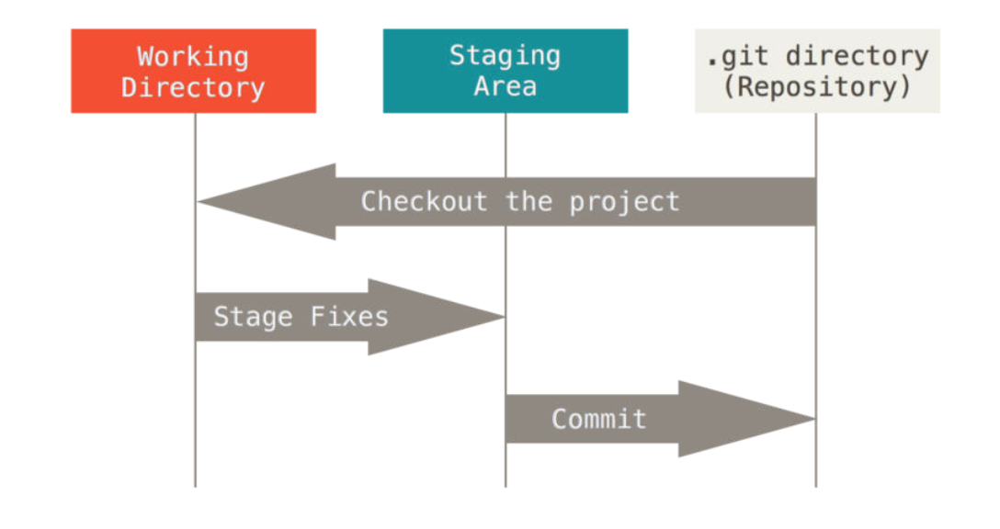
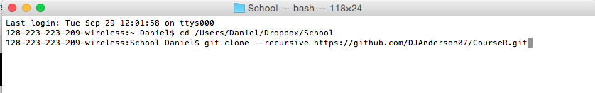
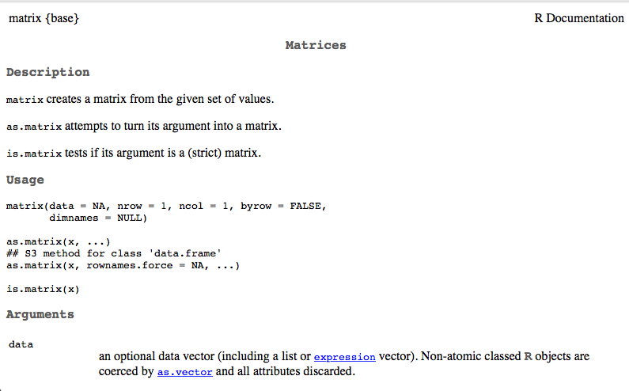
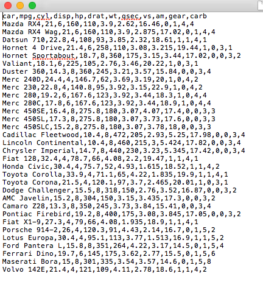

Scheduling
| Week | Date | Time |
|---|---|---|
| Week 1 | 2015-10-02 | 9-11 am |
| Week 1.5 | 2015-10-16 | 9-11 am |
| Week 2 | 2015-10-30 | 9-11 am |
| Week 2.5 | 2015-11-13 | 9-11 am |
| Week 3 | 2015-11-27 | 9-11 am |
| Week 3.5 | 2015-12-11 | 9-11 am |
Reschedule: 2015-11-27
Daniel Anderson
R Course
| Week | Date | Time |
|---|---|---|
| Week 1 | 2015-10-02 | 9-11 am |
| Week 1.5 | 2015-10-16 | 9-11 am |
| Week 2 | 2015-10-30 | 9-11 am |
| Week 2.5 | 2015-11-13 | 9-11 am |
| Week 3 | 2015-11-27 | 9-11 am |
| Week 3.5 | 2015-12-11 | 9-11 am |
Reschedule: 2015-11-27


knitr and knit2htmlFind an environment that works for you


Version control
All you'll ever need to know on git and then some: https://git-scm.com/book/en/v2



git clone --recursive [link] to clone the repository
--recursive command neccessary because of the specific way I built the
repository.CD rather than cd.cd [directory]
git clone --recursive [link]


cd (or CD)git status to see if any changes have been made
git pull to update the main course foldergit submodule update --recursive to update all the weekly foldersI will be sending emails periodically asking you to update the folders. For at least the first first few times, I will also give explicit instructions to get your repository up to date.

3 + 2
## [1] 5
(1/-(3/2)^2) / 2^-1/9
## [1] -0.09876543
a <- 3
b <- 2
a + b
## [1] 5
a / (a + b)
## [1] 0.6
Objects can be of a variety of types, which we'll talk about much more starting next week. But here are just a few
string <- "Hello world!"
logical <- TRUE
double <- 3.2587021
Integer <- 6
In this case, we can't exactly do arithimetic with all of these. For example
string + double
## Error in string + double: non-numeric argument to binary operator
But, these objects can be extremely useful in programming, as we will see.
Object assignment can be helpful to play a trick on somebody (this is one I actually did with our friend from Ohio).
Ducks <- 2
Buckeyes <- 1
Then clear the console, so they can't see the code you've previously written.
Ducks > Buckeyes
## [1] TRUE
Ducks < Buckeyes
## [1] FALSE
Buckeyes > Ducks
## [1] FALSE
+. ()
sum(), lm()? is your best friend
?lm will tell you all the arguments for the `lm function? is too confusing (often the case), try
google. There are often more interpretable examples from people online.An R package is a suite of functions generally organized around a common theme.
stringr
lme4
ggplot2
As of this writing (2015-09-29 15:51:34), there are 7,179 packages available through CRAN.
install.packages("packageName")Countless other packages available on github, personal websites, and other repository websites (e.g., bitbucket)
r2Winsteps packagePackages not on CRAN can be installed in numerous ways. For those on github, I
find using the devtools package to be the most straightforward.
install.packages("devtools")
library(devtools)
install_github("DJAnderson07/r2Winsteps")
We will be using multiple packages throughout the course
You will actually write your own package (and if you're feeling ambitious,
publish it to github)
+. is.vector(Ducks)
## [1] TRUE
Ducks is a vector, of length one\[ \begin{equation*} \qquad \begin{bmatrix} p_{1} \\\ p_{2} \\\ \vdots \\\ p_{n} \end{bmatrix} \end{equation*} \]
\[ \begin{equation*} \qquad \begin{bmatrix} p_{1} & p_{2} & \ldots & p_{n} \end{bmatrix} \end{equation*} \]
\[ \begin{equation*} \qquad \begin{bmatrix} 1 & 2 & 3 \end{bmatrix} \end{equation*} \]
numVec <- c(1, 2, 3)
numVec
## [1] 1 2 3
\[ \begin{equation*} \qquad \begin{bmatrix} A & B & C \end{bmatrix} \end{equation*} \]
letVec <- c("A", "B", "C")
letVec
## [1] "A" "B" "C"
c() function, which stands for concatenate or combine. \[ \begin{equation*} \textbf{M} = \qquad \begin{bmatrix} p_{11} & p_{12} & \ldots & p_{1n} \\ p_{21} & p_{22} & \ldots & p_{2n} \\ \vdots & \vdots & \ddots & \vdots \\ p_{m1} & p_{m2} & \ldots & p_{mn} \end{bmatrix} \end{equation*} \]
v1 <- c(10, 11, 12, 13)
v2 <- c(20, 21, 22, 23)
v3 <- c(30, 31, 32, 33)
mat <- matrix(c(v1, v2, v3),
nrow = 3, ncol = 4, byrow = TRUE)
mat
## [,1] [,2] [,3] [,4]
## [1,] 10 11 12 13
## [2,] 20 21 22 23
## [3,] 30 31 32 33
?matrix

byrow or bycol?matRow <- matrix(c(v1, v2, v3),
nrow = 3, ncol = 4, byrow = TRUE)
matRow
## [,1] [,2] [,3] [,4]
## [1,] 10 11 12 13
## [2,] 20 21 22 23
## [3,] 30 31 32 33
matCol <- matrix(c(v1, v2, v3),
nrow = 3, ncol = 4, byrow = FALSE)
matCol
## [,1] [,2] [,3] [,4]
## [1,] 10 13 22 31
## [2,] 11 20 23 32
## [3,] 12 21 30 33
v1 <- c(10, 11, 12, 13)
v2 <- c(20, 21, 22, 23)
v3 <- c(30, 31, 32, 33)
matRow <- matrix(c(
c(10, 11, 12, 13),
c(20, 21, 22, 23),
c(30, 31, 32, 33)
),
nrow = 3, ncol = 4, byrow = TRUE)
matRow
## [,1] [,2] [,3] [,4]
## [1,] 10 11 12 13
## [2,] 20 21 22 23
## [3,] 30 31 32 33
matRow <- matrix(c(
10, 11, 12, 13,
20, 21, 22, 23,
30, 31, 32, 33
),
nrow = 3, ncol = 4, byrow = TRUE)
matRow
## [,1] [,2] [,3] [,4]
## [1,] 10 11 12 13
## [2,] 20 21 22 23
## [3,] 30 31 32 33
byrow argumentWhich snippets of code will produce the matrix below
\[ \begin{equation*} \textbf{mat} = \qquad \begin{bmatrix} 23 & 41 & 18 & 27 \\ 16 & 11 & 72 & 29 \\ 18 & 51 & 32 & 63 \\ \end{bmatrix} \end{equation*} \]
A <- matrix(c(
23, 41, 18, 27,
16, 11, 72, 29,
18, 51, 32, 63),
nrow = 3, ncol = 4)
B <- matrix(c(
c(23, 41, 18, 27),
c(16, 11, 72, 29),
c(18, 51, 32, 63)
),
nrow = 3, ncol = 4, byrow = TRUE)
C <- matrix(c(
c(23, 16, 18),
c(41, 11, 51),
c(18, 72, 32),
c(27, 29, 63)
),
nrow = 3, ncol = 4)
Produce the following matrix and vector. \[ \begin{equation*} \textbf{m} = \qquad \begin{bmatrix} 67 & 11 & 10 \\ 44 & 22 & 33 \\ 39 & 94 & 85 \\ 49 & 6 & 12 \\ 22 & 86 & 61 \\ \end{bmatrix} \end{equation*} \]
\[ \begin{equation*} \textbf{v} = \qquad \begin{bmatrix} 11 & 22 & 33 & 44 & 55 \\ \end{bmatrix} \end{equation*} \]
Now add them together. What do you get?
(You can work with a partner)
matRow <- matrix(c(
10, 11, 12, 13,
20, 21, 22, 23,
30, 31, 32, 33
),
nrow = 3, ncol = 4, byrow = TRUE)
Is more readable, and easy to understand than
matRow<-matrix(c(10,11,12,13,20,21,22,23,30,31,32,33),nrow=3,ncol=4,byrow=TRUE)

Please review a style guide, and follow those protocols religiously
I recommend starting with Wickham's http://adv-r.had.co.nz/Style.html
Will make both our lives easier

v1 <- c(11, 12, 13, 14, 15,
16, 17, 18, 19, 20)
v1[5]
## [1] 15
sevenToTen <- 7:10
sevenToTen
## [1] 7 8 9 10
v1[sevenToTen]
## [1] 17 18 19 20
v1[7:10]
## [1] 17 18 19 20
v1 <- c(11, 12, 13, 14, 15, 16, 17, 18, 19, 20)
gt13 <- v1 > 13
gt13
## [1] FALSE FALSE FALSE TRUE TRUE TRUE TRUE TRUE TRUE TRUE
v1[gt13]
## [1] 14 15 16 17 18 19 20
v1 <- c(11, 12, 13, 14, 15, 16, 17, 18, 19, 20)
odd <- seq(from = min(v1),
to = max(v1), by = 2)
odd
## [1] 11 13 15 17 19
Note that the above code assumes the lowest value is odd (i.e., this isn't great code, but illustrates the principle)
select <- v1 %in% odd
select
## [1] TRUE FALSE TRUE FALSE TRUE FALSE TRUE FALSE TRUE FALSE
v1[select]
## [1] 11 13 15 17 19
v1 <- c(11, 12, 13, 14, 15,
16, 17, 18, 19, 20)
oddLoc <- seq(from = 1,
to = length(v1), by = 2)
oddLoc
## [1] 1 3 5 7 9
v1[oddLoc]
## [1] 11 13 15 17 19
v1[c(TRUE, FALSE)]
## [1] 11 13 15 17 19
The above code illustrates the principle of recycling, which we'll discuss more in Week 3.
indexing
[] with the same conventions as
mathematical matrices, i.e., [row , column]
\[ \begin{equation*} \textbf{mat} = \qquad \begin{bmatrix} 10 & 11 & 12 & 13 \\ 20 & 21 & 22 & 23 \\ 30 & 31 & 32 & 33 \\ \end{bmatrix} \end{equation*} \]
mat[3,2]
## [1] 31
mat[2,4]
## [1] 23
mat[2, ]
## [1] 20 21 22 23
\[ \begin{equation*} \textbf{mat} = \qquad \begin{bmatrix} 10 & 11 & 12 & 13 \\ 20 & 21 & 22 & 23 \\ 30 & 31 & 32 & 33 \\ \end{bmatrix} \end{equation*} \]
mat[ ,3]
## [1] 12 22 32
column3 <- mat[ ,3]
column3
## [1] 12 22 32
column3[2]
## [1] 22
mat[ ,3][2]
## [1] 22
which is the same as
mat[2,3]
## [1] 22
\[ \begin{equation*} \textbf{mat} = \qquad \begin{bmatrix} 10 & 11 & 12 & 13 \\ 20 & 21 & 22 & 23 \\ 30 & 31 & 32 & 33 \\ \end{bmatrix} \end{equation*} \]
drop = FALSE
argumentmat[ ,2, drop = FALSE]
## [,1]
## [1,] 11
## [2,] 21
## [3,] 31
col1_3 <- c(1,3)
mat[ ,col1_3]
## [,1] [,2]
## [1,] 10 12
## [2,] 20 22
## [3,] 30 32
log1 <- mat > 13 & mat < 23
log1
## [,1] [,2] [,3] [,4]
## [1,] FALSE FALSE FALSE FALSE
## [2,] TRUE TRUE TRUE FALSE
## [3,] FALSE FALSE FALSE FALSE
mat[log1]
## [1] 20 21 22
\[ \begin{equation*} \textbf{mat} = \qquad \begin{bmatrix} 10 & 11 & 12 & 13 \\ 20 & 21 & 22 & 23 \\ 30 & 31 & 32 & 33 \\ \end{bmatrix} \end{equation*} \]
log2 <- (mat > 13 & mat < 23) |
(mat > 30 & mat < 33)
log2
## [,1] [,2] [,3] [,4]
## [1,] FALSE FALSE FALSE FALSE
## [2,] TRUE TRUE TRUE FALSE
## [3,] FALSE TRUE TRUE FALSE
mat[log2]
## [1] 20 21 31 22 32
Note the odd order, because the subsetting is occuring by column, rather than row.
What is a working directory? (and into the weeds we go...)
Identify current working directory
getwd()
## [1] "/Users/Daniel/Dropbox/Teaching/CourseR_Weeks/Week1"
What's in this directory? Two ways to find out:
Navigate to the directory and take a look.

Have R look for you
list.files()
## [1] "assets" "data" "ExampleRMarkdown.html"
## [4] "ExampleRMarkdown.Rmd" "libraries" "LICENSE"
## [7] "Week1.html" "Week1.md" "Week1.Rmd"
The list.files() function shows what R "sees".
setwd("./nested/folders")
Here the . is essentially a fill-in for getwd().
setwd("..")
setwd("../..")
To read data into R, you must tell R where the data are located by either changing the working directory, or by providing the full path. For example
setwd("/Users/Daniel/Dropbox/Teaching/CourseR/data/")
d <- read.csv("cars.csv")
is equivalent to
d <- read.csv("/Users/Daniel/Dropbox/Teaching/CourseR/data/cars.csv")
Also note that the shortcuts for changing directories can be used here too, which can often increase efficiency.
"(../raw)"
foreign or memisc packages)Fairly good blog post: http://www.r-bloggers.com/importing-data-into-r-from-different-sources/
?read.table

file
"cars.txt"header
read.table defaults to FALSEread.csv and others default to TRUEsep
read.table defaults to ""read.csv defaults to ","read.delim defaults to tab delimiter "\t"Others
na.stringsskipcomment.charstringsAsFactors

cars <- read.csv("./data/cars.csv")
head() tail() and str() to check that the data were read in properlyhead(cars)
## model mpg cyl disp hp drat wt qsec vs am gear carb
## 1 Mazda RX4 21.0 6 160 110 3.90 2.620 16.46 0 1 4 4
## 2 Mazda RX4 Wag 21.0 6 160 110 3.90 2.875 17.02 0 1 4 4
## 3 Datsun 710 22.8 4 108 93 3.85 2.320 18.61 1 1 4 1
## 4 Hornet 4 Drive 21.4 6 258 110 3.08 3.215 19.44 1 0 3 1
## 5 Hornet Sportabout 18.7 8 360 175 3.15 3.440 17.02 0 0 3 2
## 6 Valiant 18.1 6 225 105 2.76 3.460 20.22 1 0 3 1
tail(cars)
## model mpg cyl disp hp drat wt qsec vs am gear carb
## 27 Porsche 914-2 26.0 4 120.3 91 4.43 2.140 16.7 0 1 5 2
## 28 Lotus Europa 30.4 4 95.1 113 3.77 1.513 16.9 1 1 5 2
## 29 Ford Pantera L 15.8 8 351.0 264 4.22 3.170 14.5 0 1 5 4
## 30 Ferrari Dino 19.7 6 145.0 175 3.62 2.770 15.5 0 1 5 6
## 31 Maserati Bora 15.0 8 301.0 335 3.54 3.570 14.6 0 1 5 8
## 32 Volvo 142E 21.4 4 121.0 109 4.11 2.780 18.6 1 1 4 2
str(cars)
## 'data.frame': 32 obs. of 12 variables:
## $ model: Factor w/ 32 levels "AMC Javelin",..: 18 19 5 13 14 31 7 21 20 22 ...
## $ mpg : num 21 21 22.8 21.4 18.7 18.1 14.3 24.4 22.8 19.2 ...
## $ cyl : int 6 6 4 6 8 6 8 4 4 6 ...
## $ disp : num 160 160 108 258 360 ...
## $ hp : int 110 110 93 110 175 105 245 62 95 123 ...
## $ drat : num 3.9 3.9 3.85 3.08 3.15 2.76 3.21 3.69 3.92 3.92 ...
## $ wt : num 2.62 2.88 2.32 3.21 3.44 ...
## $ qsec : num 16.5 17 18.6 19.4 17 ...
## $ vs : int 0 0 1 1 0 1 0 1 1 1 ...
## $ am : int 1 1 1 0 0 0 0 0 0 0 ...
## $ gear : int 4 4 4 3 3 3 3 4 4 4 ...
## $ carb : int 4 4 1 1 2 1 4 2 2 4 ...
summary()summary(cars)
## model mpg cyl disp
## AMC Javelin : 1 Min. :10.40 Min. :4.000 Min. : 71.1
## Cadillac Fleetwood: 1 1st Qu.:15.43 1st Qu.:4.000 1st Qu.:120.8
## Camaro Z28 : 1 Median :19.20 Median :6.000 Median :196.3
## Chrysler Imperial : 1 Mean :20.09 Mean :6.188 Mean :230.7
## Datsun 710 : 1 3rd Qu.:22.80 3rd Qu.:8.000 3rd Qu.:326.0
## Dodge Challenger : 1 Max. :33.90 Max. :8.000 Max. :472.0
## (Other) :26
## hp drat wt qsec
## Min. : 52.0 Min. :2.760 Min. :1.513 Min. :14.50
## 1st Qu.: 96.5 1st Qu.:3.080 1st Qu.:2.581 1st Qu.:16.89
## Median :123.0 Median :3.695 Median :3.325 Median :17.71
## Mean :146.7 Mean :3.597 Mean :3.217 Mean :17.85
## 3rd Qu.:180.0 3rd Qu.:3.920 3rd Qu.:3.610 3rd Qu.:18.90
## Max. :335.0 Max. :4.930 Max. :5.424 Max. :22.90
##
## vs am gear carb
## Min. :0.0000 Min. :0.0000 Min. :3.000 Min. :1.000
## 1st Qu.:0.0000 1st Qu.:0.0000 1st Qu.:3.000 1st Qu.:2.000
## Median :0.0000 Median :0.0000 Median :4.000 Median :2.000
## Mean :0.4375 Mean :0.4062 Mean :3.688 Mean :2.812
## 3rd Qu.:1.0000 3rd Qu.:1.0000 3rd Qu.:4.000 3rd Qu.:4.000
## Max. :1.0000 Max. :1.0000 Max. :5.000 Max. :8.000
##
NA coded as 999read.csv() won't work here
read.table()sep, na, and col.namestrees <- read.table("./data/trees.txt", sep = "|", na = "999",
col.names = c("Girth", "Height", "Volume"))
head(trees)
## Girth Height Volume
## 1 8.3 NA NA
## 2 NA 65 10.3
## 3 NA 63 NA
## 4 10.5 72 16.4
## 5 10.7 NA NA
## 6 10.8 NA 19.7
c.
library(foreign)
violence <- read.spss("./data/USViolentActs.sav", to.data.frame = TRUE)
## Warning in read.spss("./data/USViolentActs.sav", to.data.frame = TRUE): ./
## data/USViolentActs.sav: Unrecognized record type 7, subtype 18 encountered
## in system file
## Warning in read.spss("./data/USViolentActs.sav", to.data.frame = TRUE): ./
## data/USViolentActs.sav: Unrecognized record type 7, subtype 24 encountered
## in system file
head(violence)
## State Murder Assault UrbanPop Rape
## 1 Alabama 13.2 236 58 21.2
## 2 Alaska 10.0 263 48 44.5
## 3 Arizona 8.1 294 80 31.0
## 4 Arkansas 8.8 190 50 19.5
## 5 California 9.0 276 91 40.6
## 6 Colorado 7.9 204 78 38.7
foreign packageto.data.frame = TRUE is vitalHmisc package may be a better alternative (I haven't explored it much, and
generally try to avoid SPSS files)?read.spss

head(cars)
## model mpg cyl disp hp drat wt qsec vs am gear carb
## 1 Mazda RX4 21.0 6 160 110 3.90 2.620 16.46 0 1 4 4
## 2 Mazda RX4 Wag 21.0 6 160 110 3.90 2.875 17.02 0 1 4 4
## 3 Datsun 710 22.8 4 108 93 3.85 2.320 18.61 1 1 4 1
## 4 Hornet 4 Drive 21.4 6 258 110 3.08 3.215 19.44 1 0 3 1
## 5 Hornet Sportabout 18.7 8 360 175 3.15 3.440 17.02 0 0 3 2
## 6 Valiant 18.1 6 225 105 2.76 3.460 20.22 1 0 3 1
cars[1:10,3]
## [1] 6 6 4 6 8 6 8 4 4 6
str() gives us a hint at an alternative subsetting methodstr(cars)
## 'data.frame': 32 obs. of 12 variables:
## $ model: Factor w/ 32 levels "AMC Javelin",..: 18 19 5 13 14 31 7 21 20 22 ...
## $ mpg : num 21 21 22.8 21.4 18.7 18.1 14.3 24.4 22.8 19.2 ...
## $ cyl : int 6 6 4 6 8 6 8 4 4 6 ...
## $ disp : num 160 160 108 258 360 ...
## $ hp : int 110 110 93 110 175 105 245 62 95 123 ...
## $ drat : num 3.9 3.9 3.85 3.08 3.15 2.76 3.21 3.69 3.92 3.92 ...
## $ wt : num 2.62 2.88 2.32 3.21 3.44 ...
## $ qsec : num 16.5 17 18.6 19.4 17 ...
## $ vs : int 0 0 1 1 0 1 0 1 1 1 ...
## $ am : int 1 1 1 0 0 0 0 0 0 0 ...
## $ gear : int 4 4 4 3 3 3 3 4 4 4 ...
## $ carb : int 4 4 1 1 2 1 4 2 2 4 ...
The $ operator can also be used to select columns
mpg variable/columncars$mpg
## [1] 21.0 21.0 22.8 21.4 18.7 18.1 14.3 24.4 22.8 19.2 17.8 16.4 17.3 15.2
## [15] 10.4 10.4 14.7 32.4 30.4 33.9 21.5 15.5 15.2 13.3 19.2 27.3 26.0 30.4
## [29] 15.8 19.7 15.0 21.4
cyl variable/columncars$cyl
## [1] 6 6 4 6 8 6 8 4 4 6 6 8 8 8 8 8 8 4 4 4 4 8 8 8 8 4 4 4 8 6 8 4
Used constantly in applied analysis work
Examples
# Frequency of cylinders
table(cars$cyl)
##
## 4 6 8
## 11 7 14
# plot the relation between horse
# power and miles per gallon
plot(cars$hp, cars$mpg)
 Not the prettiest plot (and we'll make them prettier soon), but the subsetting
allows us to select the columns we want for the plot.
Not the prettiest plot (and we'll make them prettier soon), but the subsetting
allows us to select the columns we want for the plot.
[], as long as they are supplied as a
stringMultiple columns can be selected in this manner if a vector of names is supplied
row , column notation with a
single variable and you do not specifiy drop = FALSEThe following two lines of code are equivalent
cars[c("mpg","cyl")]
cars[ ,c("mpg","cyl")]
cars["mpg"]
cars[ ,"mpg", drop = FALSE]
cars["mpg"]
cars[ ,"mpg"]
cars["mpg"]
## mpg
## 1 21.0
## 2 21.0
## 3 22.8
## 4 21.4
## 5 18.7
## 6 18.1
## 7 14.3
## 8 24.4
## 9 22.8
## 10 19.2
## 11 17.8
## 12 16.4
## 13 17.3
## 14 15.2
## 15 10.4
## 16 10.4
## 17 14.7
## 18 32.4
## 19 30.4
## 20 33.9
## 21 21.5
## 22 15.5
## 23 15.2
## 24 13.3
## 25 19.2
## 26 27.3
## 27 26.0
## 28 30.4
## 29 15.8
## 30 19.7
## 31 15.0
## 32 21.4
cars[ ,"mpg"]
## [1] 21.0 21.0 22.8 21.4 18.7 18.1 14.3 24.4 22.8 19.2 17.8 16.4 17.3 15.2
## [15] 10.4 10.4 14.7 32.4 30.4 33.9 21.5 15.5 15.2 13.3 19.2 27.3 26.0 30.4
## [29] 15.8 19.7 15.0 21.4
mpg25up <- cars$mpg > 25
cars[mpg25up, ]
## model mpg cyl disp hp drat wt qsec vs am gear carb
## 18 Fiat 128 32.4 4 78.7 66 4.08 2.200 19.47 1 1 4 1
## 19 Honda Civic 30.4 4 75.7 52 4.93 1.615 18.52 1 1 4 2
## 20 Toyota Corolla 33.9 4 71.1 65 4.22 1.835 19.90 1 1 4 1
## 26 Fiat X1-9 27.3 4 79.0 66 4.08 1.935 18.90 1 1 4 1
## 27 Porsche 914-2 26.0 4 120.3 91 4.43 2.140 16.70 0 1 5 2
## 28 Lotus Europa 30.4 4 95.1 113 3.77 1.513 16.90 1 1 5 2
cars[cars$mpg > 25 & cars$gear == 5, ]
## model mpg cyl disp hp drat wt qsec vs am gear carb
## 27 Porsche 914-2 26.0 4 120.3 91 4.43 2.140 16.7 0 1 5 2
## 28 Lotus Europa 30.4 4 95.1 113 3.77 1.513 16.9 1 1 5 2
cars$mpg > 25
## [1] FALSE FALSE FALSE FALSE FALSE FALSE FALSE FALSE FALSE FALSE FALSE
## [12] FALSE FALSE FALSE FALSE FALSE FALSE TRUE TRUE TRUE FALSE FALSE
## [23] FALSE FALSE FALSE TRUE TRUE TRUE FALSE FALSE FALSE FALSE
cars$mpg > 25 & cars$gear == 5
## [1] FALSE FALSE FALSE FALSE FALSE FALSE FALSE FALSE FALSE FALSE FALSE
## [12] FALSE FALSE FALSE FALSE FALSE FALSE FALSE FALSE FALSE FALSE FALSE
## [23] FALSE FALSE FALSE FALSE TRUE TRUE FALSE FALSE FALSE FALSE
subset() function can be very useful for subsetting vectors, matrices,
or data frames?subset

subsetx = object to subsetsubset logical vectorselect optionally used to select columnssubset(cars,
subset = mpg > 25,
select = c("model", "mpg", "hp"))
## model mpg hp
## 18 Fiat 128 32.4 66
## 19 Honda Civic 30.4 52
## 20 Toyota Corolla 33.9 65
## 26 Fiat X1-9 27.3 66
## 27 Porsche 914-2 26.0 91
## 28 Lotus Europa 30.4 113
subset(cars, hp > 220)
## model mpg cyl disp hp drat wt qsec vs am gear carb
## 7 Duster 360 14.3 8 360 245 3.21 3.570 15.84 0 0 3 4
## 17 Chrysler Imperial 14.7 8 440 230 3.23 5.345 17.42 0 0 3 4
## 24 Camaro Z28 13.3 8 350 245 3.73 3.840 15.41 0 0 3 4
## 29 Ford Pantera L 15.8 8 351 264 4.22 3.170 14.50 0 1 5 4
## 31 Maserati Bora 15.0 8 301 335 3.54 3.570 14.60 0 1 5 8

---
title: Example Markdown document
author: Daniel Anderson
date: "2015-09-17"
---

output: argument (pdf_document,
html_document, word_document). Must be specified as it is rendered, if
not supplied.# Level 1
## Level 2
### Level 3 (etc.)
* Unordered list
- inset
+ inset more
- etc.
1. Ordered list
a. blah blah
2. More stuff

Start a code chunk with ```{r}, then produce some r code, then close the chunk with three additional back ticks ```.

a <- 3
b <- 5
a + b * (exp(a)/b)
## [1] 23.08554
You can show code without evaluating it, using eval = FALSE.

Alternatively, you can evaluate the code without displaying it, using echo =
FALSE.


A single back tick followed by r prooduces inline code to be evaluated.

This is an example of inline code, where I want to refer to the sum of a and
b, which is 8.
Through a text editor (e.g., SublimeText)
install.packages("rmarkdown")
library(rmarkdown)
setwd("dir/to/Rmd/doc")
render("ExampleRMarkdown.Rmd",
"html_document")
Note that the document type need not be specified if output: is supplied in
the YAML front matter.
Through RStudio